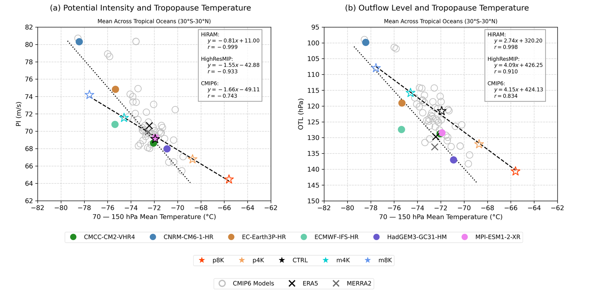

Tropical Cyclones

Research Portfolio
A curated overview of tropical dynamics, climate feedbacks, and model-development research.
Theme Preview
Tropical Cyclones
Forcing and Feedback

Model Development and Evaluation

Overview
Process-focused work on tropical cyclone genesis, intensity, and frequency response, emphasizing radiation-convection coupling, upper-atmosphere controls, and warming-climate amplification mechanisms.
Journal of Climate (2021): radiative interaction controls on TC genesis, frequency, and storm duration.
Read More
Journal of Climate (2023): vertical-process decomposition of radiative feedbacks and moist static energy variance in TCs.
Read More
Geophysical Research Letters (2026): upper-atmosphere bias controls on potential intensity, TC frequency, and ACE.
Read More
Journal of Climate manuscript draft (JCLI-D-25-0570): efficacy-driven amplification of TC intensification.
Read More
JAMES (2021): suppressing synoptic-scale radiative coupling weakens aggregation and reduces extreme tropical precipitation.
Read More
Science Advances (2024): tropical cloud-feedback uncertainty links ECS spread with TC seed and frequency response.
Read MoreOverview
Research on radiative feedback structure and pattern effects, including meridional forcing efficacy, land-mediated ERF adjustments, and Green's-function analysis of SST-driven longwave and shortwave responses.

How the latitude of imposed radiative forcing changes feedback structure and effective climate sensitivity.
Read More
Nature Climate Change (2021): salinity-pattern amplification enhances ocean heat uptake and moderates transient warming.
Read More
Land temperature and soil-moisture constraints shift fixed-SST 4xCO2 ERF and radiative-adjustment structure in AM4.
Read More
Using a Green's function framework to diagnose SST-pattern effects on radiative feedbacks in GFDL AM4 and CM4.
Read More
Large-scale convective aggregation links tropical SST gradients to longwave and shortwave radiative responses.
Read More
Journal of Climate (2024): why Green's-function superposition can overestimate radiative responses under large patterned SST warming.
Read MoreOverview
Method-development efforts spanning coordinated experiment protocols, emulator evaluation, and precipitation-process benchmarking to diagnose model behavior and improve projection credibility.

A coordinated protocol to diagnose and compare atmospheric Green's functions across models.
Read More
Investigating how climate models simulate the daily cycle of rainfall and identifying biases.
Read More
Examining how precipitation patterns are expected to evolve in a warming climate.
Read More